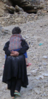
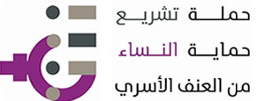
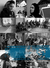
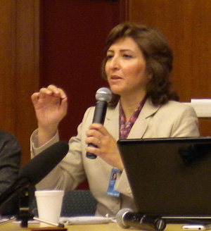

تغییر برای برابری
تغییر برای برابریسوالی که در این مورد ممکن است پرسیده شود این است که جایگاه فمنیست های ایرانی داخل کشور چیست و کجاست؟ آن ها مدت ها برای آزادی های مدنی خود تلاش می کرده اند. هم اکنون تا چه اندازه برای دفاع از اهداف و خواسته های جنبش سبز مشارکت می کنند؟
پذيرش > واژه كليدها > صفحه بندی > ستون وسط
ستون وسط
مقالهها
-
امواج فمنیستی در سونامی سبز ایرانی؟/گلبرگ باشی
2 سپتامبر 2009, بوسيلهى pari -
 تصویر و کلام در برابر خشونت؛ طرحهایی از سراسر جهان برای افزایش آگاهی در مورد خشونت خانگی/ روژین محمدی
تصویر و کلام در برابر خشونت؛ طرحهایی از سراسر جهان برای افزایش آگاهی در مورد خشونت خانگی/ روژین محمدی
25 اوت 2013تغییر برای برایری - پژوهش ها نشان میدهند که خشونت علیه زنان پدیده ای جهانی است. ممکن است کشوره بنا به ذائقه ی سیاست مدارانشان آن را تقلیل دهند یا توجیه کنند، اما وجودش آنقدر بدیهی است که نمی توان آن را به کلی انکار کرد. یکی از راههای مبارزه با «خشونت علیه زنان» درگیر کردن مردم در زندگی روزمره و حساس کردن انها به امید برانگیختن واکنش مثبت از سوی آنهاست.
-

با زنان ِ همیشه در راه / گزارش سفر، مریم زندی
12 اوت 2011سفرنامه نویسی از انواع نوشتاری و امکانی است برای آشنایی بیشتر با زندگی مردمان. توصیف و مشاهده زندگی زنان، دردها، رنج ها، شادی ها، تجربه آنها از مناسبات تبعیض آمیز و مبارزه روزمره آنان در زندگی بخشی از سفرنامه هایی است که زنان نقطه کانونی آنها هستند. مریم زندی از فعالان حقوق زنان در ایران از گردشگران پرسابقه نیز هست. و سفرهای متعددی به مناطق مختلف ایران داشته و دارد و در هر سفر یادداشت ها و تصاویری از این سفرها گرد آورده است و به ثبت لحظه هایی از زندگی زنان پرداخته است...
-

تصویب قانون حمایت از زنان و خانواده در برابر خشونت خانگی در مجلس لبنان / آزاده فرامرزیها
23 ژوئيه 2013مهمترین دستاورد ما در این پیشنویس گنجاندن مکانیسم های حمایت از زنان مورد خشونت توسط بخش ویژه ای از نیروهای امنیت داخلی است که برای مقابله با خشونت خانگی آموزش دیده اند". این بخش ویژه اجازه دارد موارد خشونت را ثبت و به دادگاه گزارش کند و همچنین زنان مورد خشونت را به خانه های امن منتقل کند.
-
سیاستهای مرتبط با بدن زن (واکنش ها و مقاومت ها و نگاهی به کمپین یک میلیون امضا) مهرانگیز کار
6 اكتبر 2013حکومت استقرار یافته بر اصل حجاب و کنترل بدن زن، از شکست در جبهه حجاب بیش از شکست در سیاست خارجی می ترسد. هر گام کوچک که زنی در ایران در مواجهه با نظام ارزشی بر می دارد، گامی بزرگ و استوار است که بنای رفیع تبعیض را می لرزاند.
-
 زماني براي گفتن هاي شجاعانه؛ آنچه كمپين مي تواند به جنبش سبز بياموزد/ محبوبه عباسقلی زاده
زماني براي گفتن هاي شجاعانه؛ آنچه كمپين مي تواند به جنبش سبز بياموزد/ محبوبه عباسقلی زاده
13 اكتبر 2009ادبيات مقاومت در برابر سركوب هنوز هم بر اساس خاطرات دو دهه پنجاه – دوران شاه – و دهه شصت است. در حالي كه شرايط امروز اقتضا مي كند كه تجربه هاي امروزين گفته شود. آن دسته از ياران و فعالاني كه از خرداد 85، تا به امروز سه سال تمام سرد و گرم روزگار سركوب و ارعاب و زندان را را با بردباري برتافتند، اكنون حرف بزنند.
-
 کودک آزاری و نقش وکلا در حمایت از کودکان آزار دیده (با مروری بر فعالیت های نسرین ستوده در انجمن حمایت از حقوق کودکان)
کودک آزاری و نقش وکلا در حمایت از کودکان آزار دیده (با مروری بر فعالیت های نسرین ستوده در انجمن حمایت از حقوق کودکان)
15 ژوئن 2011نسرین ستوده همکاری خود با انجمن را از سال 82 و با فعالیت در کمیته حقوقی انجمن آغاز کرد و به سرعت به هیئت مدیره انجمن نیز راه یافت.او در طول سال های فعالیت خود وکالت پرونده های بسیاری از کودکان آسیب دیده از کودک آزاری را بر عهده داشت و برای پیگیری این پرونده ها به شهرهای مختلفی از ایران هم سفر کرد. نسرین هیچ وقت برای قبول پرونده ها نمی پرسید این پرونده متعلق به کدام شهر است، برای او مسافت اهمیتی نداشت.نسرین رسالتی را در قبال حمایت از حقوق کودکان احساس می کرد که او را در کارش متعهد، جدی و مسئول می کرد
-

هفته اول شهریور با زنان در خبر
31 اوت 2011هفته اول شهریور مقارن است با سالگرد کمپین یک میلیون امضا که امسال پنج ساله شد. عدم اجرای بیمه زنان خانه دار, برگزاری مراسم لیلا اسفندیاری و ممانعت از پخش یک فیلم درباره او در این مراسم, تشکیل ستادی برای پیشگیری از طلاق, ساختن سپر انسانی توسط زنان در کردستان عراق و کارزار عدم خشونت علیه زنان در کلمبیا از دیگر اخبار حوزه زنان در این هفته بود.
-

اهل کدام کشور هستی / فرانک فرید
12 مارس 2010, بوسيلهى pariنژاد، قومیت، جنسیت، زبان و فرهنگ، طبقات اجتماعی، مذهب و منطقه ی سکونت و عدم توانایی و ... جزو عواملی هستند که نابرابری و تبعیض ایجاد می کنند. اغلب زنان ما، با بیشتر این تبعیضها مواجهند و در شرایط پیچیده ی برآمده از این نابرابریها، زنان اعتماد به نفس خود را از دست می دهند و خود را در هم شکسته می یابند.
-
 از نياکان ميشل اوباما تا جنبش زنان ايران/شکوه میرزادگی
از نياکان ميشل اوباما تا جنبش زنان ايران/شکوه میرزادگی
16 ژوئيه 2009, بوسيلهى pariاکنون تغيير و برابری در حقوق و وضعيت ما به آزادی خواهی مردمان ايران گره خورده است، چرا که آزادی خواهی مردمان ما نيز راه برون شد روشنی از انواع تبعيض ها، از جمله تبعيض نسبت به حقوق زنان، را بيشتر نمايان ساخته است.
0 | ... | 200 | 210 | 220 | 230 | 240 | 250 | 260 | 270 | 280 | ... | 450